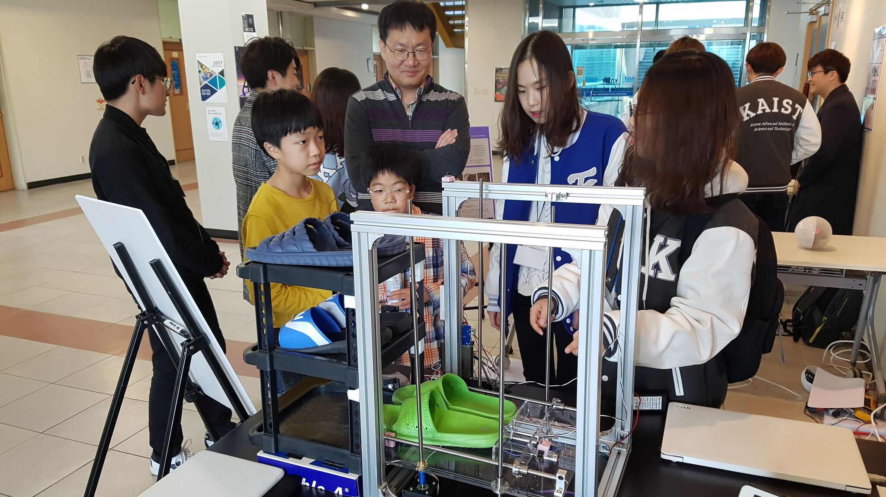
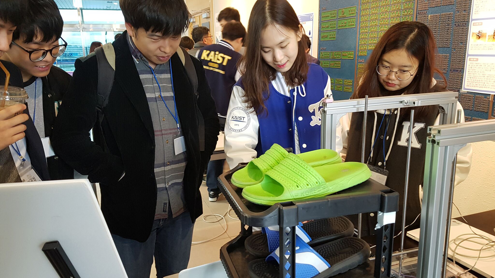

본 로봇은 신발을 벗어 두면, 이를 인식하여 신발장의 빈 칸에 자동으로 신발을 정리해 주는 로봇이다. 사람이 신발을 로봇 위에 벗으면 거리 센서가 이를 인식하고, 스테핑 모터와 DC모터로 신발을 옮겨 신발을 자동으로 정리하는 로봇을 제작하였다. 로봇이 신발을 자동으로 정리함으로써 허리를 숙이는 불편함을 해소하였으며, 고령자나 임산부 등 허리를 숙이지 못하는 사람들도 신발을 깔끔하게 정리할 수 있게 되었다.